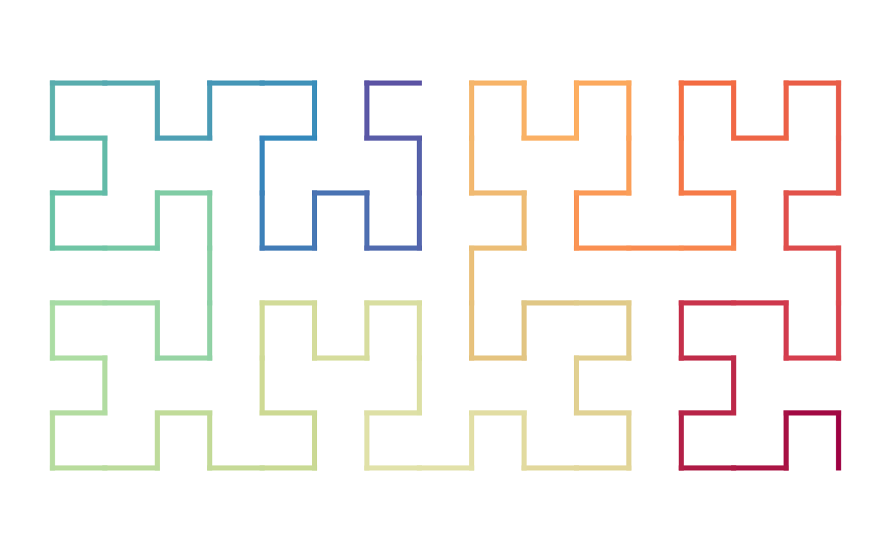
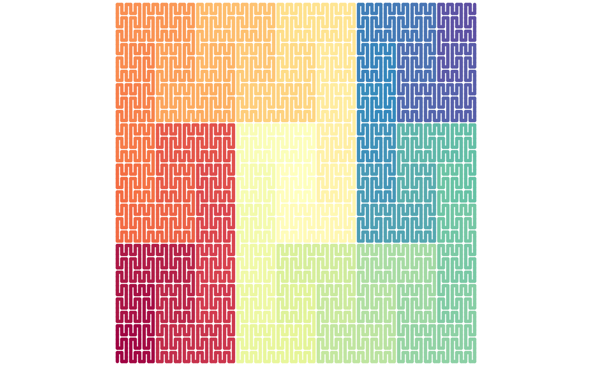
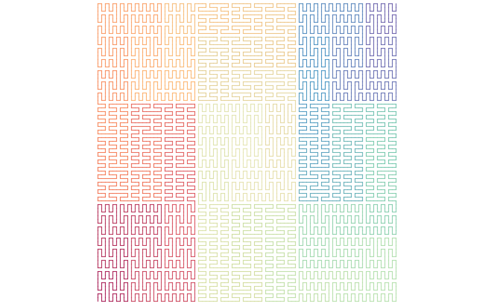

Create space-filling curves
The seed sequence. In most cases, the seed sequence is a single base pattern, which can be specified as a single letter, then rot controls
the initial rotation of the base pattern. It also supports a sequence with more than one base patterns as the seed sequence. In this case,
it can be specified as a string of more than one base letters, then rot can be set to a single rotation scalar which controls the rotation of the
first letter, or a vector with the same length as the number of base letters.
A vector of the transverse code. The left side corresponds to the lower levels of the curve and the right side corresponds to the higher level of the curve.
The value can be set as a vector e.g. c(1, 2, 1), or as a string e.g. "121", or as a number e.g. 121.
Rotation of the seed sequence, measured in the polar coordinate system, in degrees.
Specifically for sfc_peano(), since there is only one transverse code 1, it can also be generated by rep(1, level).
Whether to usethe "flipped" rules? For the Peano curve and the Meander curve, there is also a "fliiped" version
of curve expansion rules. On each level expansion in the Peano curve and the Meander curve, a point expands to nine points in
3x3 grids. Thus the value of flip can be set as a logical vector of length of nine that controls whether to use the flipped expansion
for the corresponding unit. Besides such "1-to-9" mode, flip can also be set as a function which acccepts the number of current points in the curve and return
a logical vector with the same length, i.e. the "all-to-all*9" mode.
sfc_hilbert() returns an sfc_hilbert object.
sfc_peano() returns an sfc_peano object.
sfc_meander() returns an sfc_meander object.
sfc_hilbert() generates the Hilbert curve from the seed sequence.
sfc_peano() generates the Peano curve from the seed sequence.
sfc_meander() generates the Meander curve from the seed sequence.
sfc_hilbert("I", "111") |> plot()
sfc_hilbert("I", "111", rot = 90) |> plot()
sfc_hilbert("IR", "111", rot = 90) |> plot()

sfc_peano("I", "111") |> plot()
sfc_peano("I", "111",
flip = c(FALSE, FALSE, FALSE, TRUE, FALSE, FALSE, TRUE, FALSE, FALSE)) |> plot()
sfc_peano("IJ", "111") |> plot()
# set `flip` to a function
# notice if split a Peano curve into three equal portion on any level,
# rotate the first subunit in the second and the third portions.
sfc_peano("I", 1111, flip = function(n) {
if(n == 1) {
return(FALSE)
}
l = rep(FALSE, n)
portion = 1
while(portion*9 <= n) {
ind = ((1:(n/3/portion))*3*portion)[rep(c(TRUE, TRUE, FALSE), n/9/portion)]
l[ind + 1] = TRUE
portion = portion*9
}
l
}) |> plot()

sfc_peano("I", 1111, rot = 90, flip = function(n) {
if(n == 1) {
return(FALSE)
}
l = rep(FALSE, n)
portion = 1
while(portion*9 <= n) {
ind = ((1:(n/3/portion))*3*portion)[rep(c(TRUE, TRUE, FALSE), n/9/portion)]
l[ind + 1] = TRUE
portion = portion*9
}
l
}) |> plot()

sfc_meander("I", "111") |> plot()
sfc_meander("I", "111",
flip = c(TRUE, FALSE, TRUE, FALSE, FALSE, TRUE, FALSE, FALSE, TRUE)) |> plot()
sfc_meander("IR", "111") |> plot()